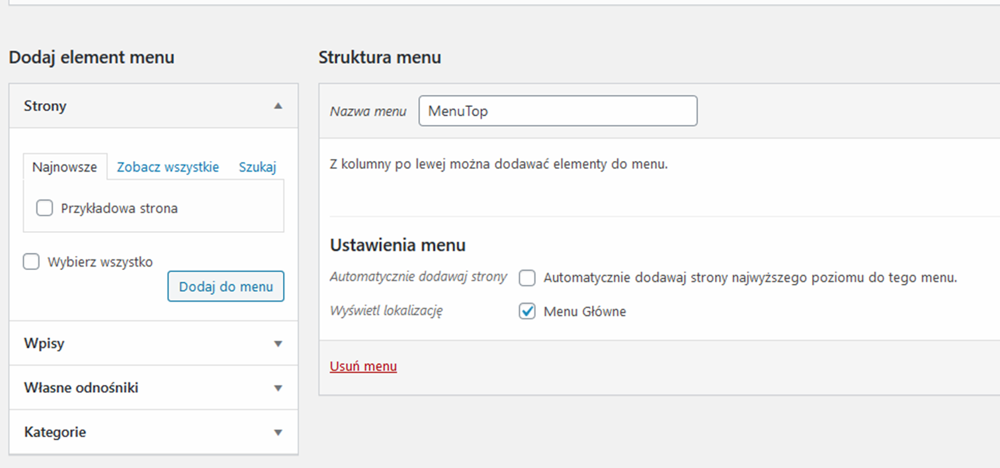

Tworzymy w CMS WordPress Menu
1. Pierwszym krokiem do dodania nowego menu jest utworzenie dokumentu functions.php w który zarejestrujemy obsługę menu w CMS Wordpress
Celem pliku functions.php jest umożliwienie twórcom motywów zdefiniowania cech motywu i jego funkcji.
Ten plik działa jak wtyczka WordPress i może służyć do dodawania własnych niestandardowych fragmentów kodu do WordPress.
2. Zarejestrujemy w pliku functions.php nasze nowe menu
3. Teraz przejdziemy do CMS http://localhost/imienazwisko/wp-admin/, widzimy że mamy już dostępną opcję "menu"
4. Przechodzę do struktury dokumentu oraz nadaję Nazwę menu np: "MenuTop" -> klikam zapisz menu
5. W tym miejscu odnajduję "Ustawienia Menu" oraz wybieram pole checkbox "Menu Główne" (czyli nazwę taką samą jak ustaliłem w pliku functions.php) -> klikam zapisz menu
6. Usuwam z menu "Przykładową stronę" oraz "Stronę główna" -> rozwijam na strzałce i klikam "usuń"
7. Po usunięciu przykładowych zakładek mam puste menu

8. Tworzymy nowe menu w tym celu przechodzimi do CSM Strony, zakładamy strony i nazywamy je tak jak posiadamy nazwy zakładek w "Menu"
9.Stron powinno być 9 - każdą stronę aby była widzoczna należy kliknąć w prawym górnym rogu opublikuj
10.Przechodzimy na zakładkę "Menu" i dodajemy nowe strony do naszego "menu" - zapisujemy menu
11.Otrzymujemy nowe menu w CMS menu -zwrócić należy uwagę na widok podmenu "Galeria", "Praca"
12.Pobieramy kod wraz z funkcją:"wp_nav_meu ze strony: POBIERZ WP_NAV_MENU
funckcja odpowiedzialna jest za pobieranie z Wordpress'a utworzonego "menu", wszystkie opcje tej funkcji zostały dokładnie opisane w dokumentacji w/w linka oraz wklejamy i modyfikujemy do pliku index.php
tak jak pokazano na zdjęciu
UWAGA !!! Cały znacznik "nav" jest ujęty w komentarzu
13. Przechodzimy do pliku: index.php, modyfikujemy kod, usuwamy stare statyczne menu nawigacyjne "nav /nav"
Proszę zwrócić uwagę co pozostawiliśmy w kodzie, jakie opcje dla wp_nav_menu( $args )
Opcja: 'theme_location' => "main-menu" to nazwa menu jaką zarejestrowaliśmy w pliku functions.php, do której się odwołujemy, która jest widoczna w CMS
'container' => "div", to nazwa znacznika przechowującego menu
'container_class' => "boxmenu", to nazwa klasy znacznika div przechowującego menu, w css mamy odwołanie do tej klasy
'menu_class' => "poziom1", to nazwa klasy dla znacznika "ul" naszej listy menu
'depth' => 2, liczba ta mówi ilu poziomowe posiadamy menu
Dodajemy jeszcze kod logoGitHub
14.Teraz czas na modyfikację arkusza styli
Po dodaniu menu, wordpress wygenerował kilka klas css które wdrożymy w naszym projekcie do poprawnego wyświetlania menu
Zachęcam wszystkich aby postudiować sobie funkcję: wp_nav_menu( $args ) wraz z dokumentacją wordpressa
Ogólnie mówiąc, dzięki niej teraz dynamicznie możemy dodawać nowe zakładki "menu" dla naszej strony
Proszę dokładnie teraz wdrożyć zmiany w css, według poniższych obrazów
Proszę zwrócić uwagę na takie klasy jak: "sub-menu", "menu-item", zostały automatycznie wygenerowane przez wp_nav_menu
Odwołujemy się do nich, łatwo sprawdzić czy są za pomocą "Inspektora przeglądarki" (F12) lub Ctrl+Shift+C
15.Na koniec w wordpress proszę dodać kolejną zakładkę do menu: np. "Aktualności" oraz poprawić kod css w celu poprawnego wyświetlania się menu